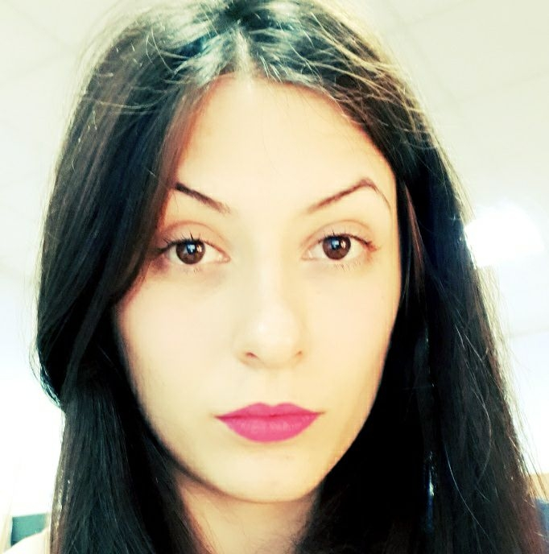

CV

Full name: Tarazanova Maria
Date of birth: 24.06.1988
E-mail: solarsystem251@gmail.com
Education
- 09/2009-06/2011: National Technical University «Kharkiv Polytechnic Institute»
Faculty: Strategical management
Speciality: Project management
Degree: Professional project management
- 09/2005-06/2009: National Technical University «Kharkiv Polytechnic Institute»
Faculty: Technology of inorganic substances
Speciality: Chemical technology of rare sparse component and materials on their base
Degree: Bachelor of chemical engineering
Professional experience
- 06/2012 – till now: Marketing specialist in Yuzhnoye SDO
- 08/2009 – 06/2012: Chemical analysis laboratory assistant in Yuzhnoye SDO
- 06/2008 – 07/2008: Chemical analysis laboratory assistant (study practice) in Argentum Enterprise
Personal Interests
In my free time I like drawing as well as interested in improvement of my language skills, studying new programs. I am trying
to keep myself trim by doing sports weekly. Purposefulness, persistence and self-development help me to achieve set goals both
in life and professional activity.